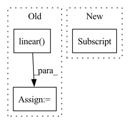

Pattern ID :36110
Before Change
def forward(self, input, label):
// --------------------------- cos(theta) & phi(theta) ---------------------------
cosine = F.linear( F.normalize(input), F.normalize(self.weight))
sine = torch.sqrt(1.0 - torch.pow(cosine, 2))
phi = cosine * self.cos_m - sine * self.sin_m
if self.easy_margin:
phi = torch.where(cosine > 0, phi, cosine)
else:
phi = torch.where(cosine > self.th, phi, cosine - self.mm)
// --------------------------- convert label to one-hot ---------------------------
// one_hot = torch.zeros(cosine.size(), requires_grad=True, device="cuda")
one_hot = torch.zeros(cosine.size(), device = "cuda")
one_hot.scatter_(1, label.view(-1, 1).long(), 1)
// -------------torch.where(out_i = {x_i if condition_i else y_i) -------------
output = (one_hot * phi) + ((1.0 - one_hot) * cosine) // you can use torch.where if your torch.__version__ is 0.4
output *= self.s
return output
After Change
cos_theta = cos_theta.clamp(-1, 1) // for numerical stability
with torch.no_grad():
origin_cos = cos_theta.clone()
target_logit = cos_theta[torch.arange(0, embbedings.size(0)), label] .view(-1, 1)
sin_theta = torch.sqrt(1.0 - torch.pow(target_logit, 2))
cos_theta_m = target_logit * self.cos_m - sin_theta * self.sin_m //cos(target+margin)In pattern: SUPERPATTERN
Frequency: 8
Non-data size: 3
Instances Fragment ID: 102432184
Project Name: cavalleria/cavaface
Commit Name: 3b84e7dee20887685ce3f9d7a63cb74db35147c3
Time: 2020-04-28
Author: 605370459@qq.com
File Name: head/metrics.py
M Class Name: ArcFace
N Class Name: ArcFace
M Method Name: forward(3)
N Method Name: forward(3)
M Parent Class: nn.Module
N Parent Class: nn.Module
M File Name: head/metrics.py
N File Name: head/metrics.py
M Start Line: 75
M End Line: 88
N Start Line: 80
N End Line: 96
Before Change
weight = tensor_fn(weight, dtype, device)
bias = tensor_fn(bias, dtype, device)
true_res = tensor_fn(true_res, dtype, device)
ret = ivy.linear( x, weight, bias)
// type test
assert ivy.is_ivy_array(ret)
// cardinality test
assert ret.shape == true_res.shapeAfter Change
x = np.random.uniform(size=outer_batch_shape+inner_batch_shape+[num_in_feats]).astype(dtype[0])
weight = np.random.uniform(size=outer_batch_shape+[num_out_feats]+[num_in_feats]).astype(dtype[1])
bias = np.random.uniform(size=weight.shape[:-1]).astype(dtype[2] )
helpers.test_array_function(
dtype, Fragment ID: 102432200
Project Name: ivy-dl/ivy
Commit Name: 4514d48376aef497c108f7ba53cc4e281b75dbd0
Time: 2022-06-13
Author: sherrytst30@gmail.com
File Name: ivy_tests/test_ivy/test_functional/test_nn/test_layers.py
M Class Name: AnonimousClass
N Class Name: AnonimousClass
M Method Name: test_linear(13)
N Method Name: test_linear(5)
M Parent Class:
N Parent Class:
M File Name: ivy_tests/test_ivy/test_functional/test_nn/test_layers.py
N File Name: ivy_tests/test_ivy/test_functional/test_nn/test_layers.py
M Start Line: 43
M End Line: 56
N Start Line: 37
N End Line: 67
Before Change
self.basis(real) * self.cutoff(real)[:, None]
).view(real.shape[0], -1)
if not input_features is None:
embedded = self.linear( torch.cat([embedded, input_features], dim=-1))
is_per = input.attrs["real"][0]
data.attrs.update(
self.outputKeyMap(
{"radial_embedding": (is_per, self.irreps_out["radial_embedding"])}After Change
else:
input = self.inputKeyMap(data)
is_per = input.attrs["input"][0]
input = input["input"]
embedded = (
self.basis(input) * self.cutoff(input)[:, None]
).view(input.shape[0], -1)
Fragment ID: 102432189
Project Name: 20171130/equivariant-nn-zoo
Commit Name: 5379a5a2de561cb346bef63294333e0bfaab68c8
Time: 2022-07-12
Author: hangruibi@outlook.com
File Name: e3_layers/nn/embedding.py
M Class Name: RadialBasisEncoding
N Class Name: RadialBasisEncoding
M Method Name: forward(2)
N Method Name: forward(2)
M Parent Class: Module
N Parent Class: Module
M File Name: e3_layers/nn/embedding.py
N File Name: e3_layers/nn/embedding.py
M Start Line: 243
M End Line: 260
N Start Line: 214
N End Line: 236
Before Change
// std, mean = torch.std_mean(fn_input, 0, keepdim=True)
// out = (fn_input - mean) / (std + 1e-5)
out = fn_input - fn_input.mean(dim=0, keepdim=True)
out0, out1 = torch.nn.functional.linear( torch.cat([out, sequence_input], 1),
linear_param,
None) .chunk(2, 1)
return torch.nn.functional.relu6(out0) * out1.tanh()
@staticmethodAfter Change
def _calc(fn_input, sequence_input, linear_param, depth):
out = fn_input
for idx in range(depth):
out = ReversibleRNNFunction._single_calc(out, sequence_input, linear_param[idx] )
return out
@staticmethod Fragment ID: 102432194
Project Name: homebrewnlp/homebrewnlp
Commit Name: d56dbd9d9e767e94890fb9281e9c69029cdc330d
Time: 2020-07-16
Author: 39779310+ClashLuke@users.noreply.github.com
File Name: module.py
M Class Name: ReversibleRNNFunction
N Class Name: ReversibleRNNFunction
M Method Name: _calc(4)
N Method Name: _calc(3)
M Parent Class: torch.autograd.Function
N Parent Class: torch.autograd.Function
M File Name: module.py
N File Name: module.py
M Start Line: 38
M End Line: 42
N Start Line: 15
N End Line: 19
Before Change
memory, encoder_self_attns = self.encoder(inputs, inputs_mask)
output, decoder_self_attns, decoder_encoder_attns = self.decoder(targets, memory, targets_mask, memory_mask)
output = self.linear( output)
return output, encoder_self_attns, decoder_self_attns, decoder_encoder_attns
After Change
targets: Optional[Tensor],
return_attns: bool = False) -> Tuple[Tensor, Tensor, Tensor, Tensor]:
batch_size = targets.size(0)
targets = targets[targets != self.eos_id] .view(batch_size, -1)
memory, encoder_self_attns = self.encoder(inputs, input_lengths)
output, decoder_self_attns, memory_attns = self.decoder(targets, input_lengths, memory) Fragment ID: 102432195
Project Name: sooftware/transformer-pytorch
Commit Name: a0b53d9802b580df564793d1f66e65e286065f00
Time: 2020-07-25
Author: sh951011@gmail.com
File Name: transformer/models/transformer.py
M Class Name: Transformer
N Class Name: Transformer
M Method Name: forward(5)
N Method Name: forward(3)
M Parent Class: nn.Module
N Parent Class: nn.Module
M File Name: transformer/models/transformer.py
N File Name: transformer/models/transformer.py
M Start Line: 74
M End Line: 84
N Start Line: 60
N End Line: 73
Before Change
output_a = self.model_a(**a)[1] // [bs, seq_len, 768]
output_b = self.model_b(**b)[1]
output = torch.cat([output_a, output_b, output_a - output_b], dim=1)
logits = self.linear( output)
loss = self.loss_fct(logits, labels)
return loss, logits
After Change
output_a = self.model_a(**a)
output_b = self.model_b(**b)
embeddings_a = mean_pooling(output_a, a["attention_mask"])
embeddings_b = mean_pooling(output_b, b["attention_mask"] )
output = torch.cat([embeddings_a, embeddings_b, embeddings_a-embeddings_b], dim=1)
logits = self.classifier(output)
loss = self.criterion(logits, labels) Fragment ID: 102432177
Project Name: prajjwal1/fluence
Commit Name: 34419f2135db008008674abe97e4d58df7050376
Time: 2020-09-22
Author: prajjwalin@protonmail.com
File Name: fluence/models/siamese_model.py
M Class Name: SiameseTransformer
N Class Name: SiameseTransformer
M Method Name: forward(3)
N Method Name: forward(3)
M Parent Class: nn.Module
N Parent Class: nn.Module
M File Name: fluence/models/siamese_model.py
N File Name: fluence/models/siamese_model.py
M Start Line: 25
M End Line: 32
N Start Line: 25
N End Line: 33